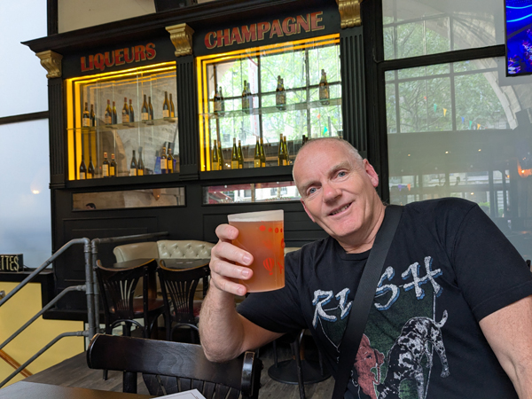
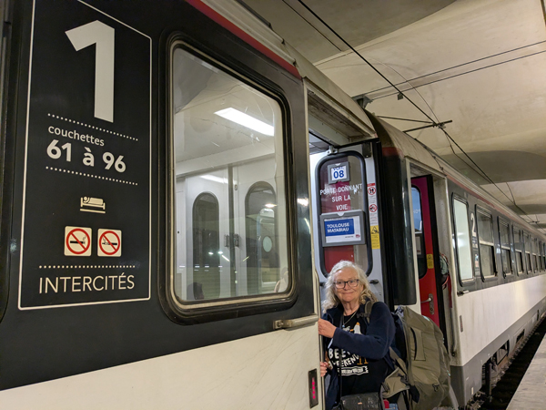
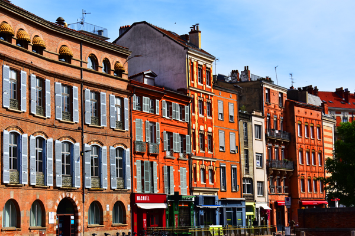
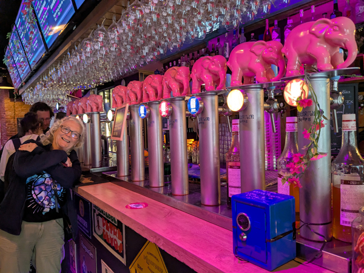
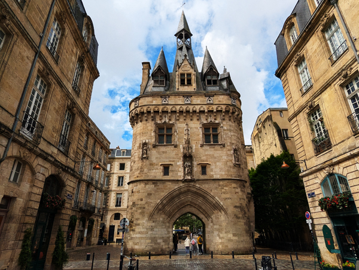
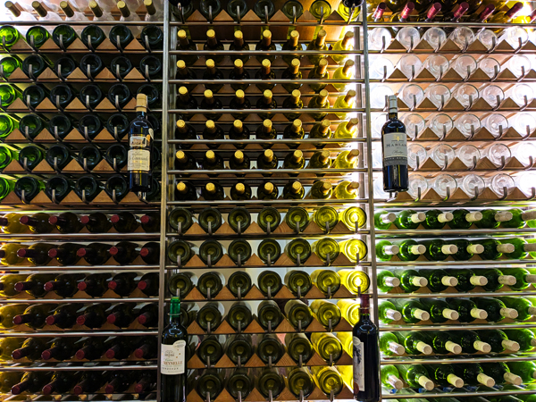

Saturday 2nd May Today was Day 1 of our Interrail trip to Portugal. We are due to meet Hoggy, Sarah, Aleks and Andi in Porto in eight days time and had decided to go by train. Our Interrail tickets give us four days of first class train travel to be used in the next month
We left Kingsclere on the 08:05 bus and got to Basingstoke just in time to catch the 08:36 train to Waterloo. We failed to find the first class carriage but had seats near the front of the train anyway so did not bother. We got into Waterloo on time and walked across London to St Pancras. We were at St Pancras just after 10:00 and went straight to The Barrel Vault for our first beer of the trip.
As we walked past the Eurostar area, it all looked a bit chaotic with queues stretching to the back of the station. We had one drink and went to join the chaos. There were a lot of people around and nothing was very organised but by ignoring the staff, we were able to get ourselves close to the front of the queue of people waiting for the 12:31 to Paris. We got through into the waiting area fairly quickly once the gates opened for our train but were soon told of delays in the tunnel. The UK to France track through the tunnel was closed and one track was being used for trains in both directions. This was what was causing the delays and the confusion outside. We eventually boarded the train just after 13:00 and finally left St Pancras at 13:51 - 80 minutes late.
Once on the train, the journey was quite enjoyable. We were in the Eurostar Plus seats so had a complimentary meal and a few glasses of wine while following the afternoon's football. We arrived at Gard du Nord at about 17:45. We got the RER across Paris to Gare de Lyon. Our next train was due to depart from Gare d'Austerlitz but the two stations are not far apart and there are more bars round Gare de Lyon.

We walked to Le Viaduc, a studenty type place with good beer and reasonably priced food. We both had meals and a couple of beers and then started walking to Austerlitz. We stopped for one more drink on the way at Le Paris Lyon which was a good move as there was nothing at all open in or around the station. We had about 30 minutes to wait around before boarding the 22:31 overnight train to Toulouse Matabiau.

We had 1st class sleeping berths booked on this train. We had only been able to get upper berths in a four birth compartment and were sharing the compartment with a French couple. We got into our beds as soon as we boarded. The beds were very comfortable and we were asleep not long after the train pulled out of the station.
Sunday 3rd May I woke just before 6:00 and we arrived in Toulouse slightly early about 40 minutes later. We walked from the station to the Novotel in the centre and despite being very early, were able to check straight into our room.
The weather forecast for today was not great. After having showers, it was tempting to go to sleep for a couple of hours but the sun was shining and there was plenty of blue sky around so we decided to go straight out and look at some of the sights before the weather deteriorated.
First stop was Marché Victor-Hugo, a large indoor food market behind the hotel. This was quite good to walk around but we did not find anywhere we wanted to stop at for breakfast so we left and walked to a near-by cafe for a couple of chocolatini's instead. We then had a couple of hours walking round the main sights. First was Basilique Saint-Sernin and then Place du Capitole, the main square with the impressive town hall. We passed the Couvent des Jacobins which was completely covered in scaffolding and then carried on out to the river and Pont Neuf.

We started heading back towards the cathedral and stopped on the way for a quick look round Musée des Augustins. We would not have bothered going in here but it is free entry on the first Sunday of the month. Neither of us were that bothered about the exhibits but the building that they were all housed in was nice enough to wander round for 15 minutes or so. We continued along the road and went into a cathedral. We did go in but there was a service taking place so we did not stay long. We walked back via Place du Capitole again and were back at the hotel just after 11:00. This time, I did go to sleep for an hour or so.
Roz went out to buy bread, cheese and pate for lunch. We ate it in the room.
At 3:30 we went down and had our welcome drink in the bar. We had then planned to go out for a couple of beers and then eat at Le Bouillon Capitole, a branch of the same chain that we we been to before in Paris. However, things did not go quite to plan. The first bar that we went to was closed so we went into The Thirsty Monk for one instead. Although this was an Irish Bar, it was very good. They had a good range of beers, they were showing rugby and football on different teles and there was a good crowd of people in there. We had a second drink while watching the football by which time it was their happy hour so we stayed for a third.

We were both getting a bit light-headed by now. We crossed the road and went for one in Delirium Café by which time we had given up on the idea of going to Le Bouillon. Instead, we had a couple of kebabs and returned to The Thirsty Monk. We had another couple of hours in there while watching Villa v Spurs and apparently taking part in their music quiz. We were back in the hotel by 9:15.
Monday 4th May We were up by about 7:30, not feeling too bad due to the early ending of yesterday's session. We checked out of the hotel at about 8:30 and walked back to the station stopping to buy food and drink on the way. We had bought tickets for the 09:24 train to Bordeaux. Even though we had 1st class tickets again, this train was not expensive so today we were not using our Interrail tickets. The train left on time and got into Bordeaux at 11:45 (also on time).
We had a walk of about 10 minutes to get to our second Novotel of the trip. This time, they did not have a room available so we left our luggage in the luggage room and headed out to start our sight-seeing. We walked along the river as far as Pont de Pierre and then went into the old town. It was a very nice area to wander round. We saw a few churches and some of the old gates which were very spectacular. We headed for the indoor market for lunch but it was closed on Mondays so went to a burger/kebab place instead. We were back at the hotel by about 2pm and were able to check in.

At 3:30, we went down for our welcome drinks. By this time the weather had deteriorated and it was raining quite heavily. We had planned to walk into the old town again but decided a tram might be a better idea. After installing the TBM app and working out how to buy tickets we got a tram from just outside the hotel. The tram followed the route we had walked earlier and dropped us at Quinconces, a minute or so away from Le Bar à Vin. This was an excellent place with reasonably priced wine.

After an hour in there we walked to The Frog & Rosbif. This was part of a chain of bars that brew their own beer and have a very good happy hour. Between 5 and 8, all their beers are €5 a pint including a very good 6.2% IPA. After a couple in there, we got a tram back to Bouillon Saint-Jean opposite the station.